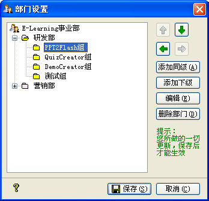

| 基本数据 - 部门设置 |
|
您可以从[系统(S)]->[基本数据]->[部门设置]打开部门设置窗口，也可以点击工具栏中的[部门设置]来打开，其界面如下图所示：  您可以在这里自定义您公司的部门结构信息，也可以对已有的信息进行编辑、删除及排序操作，部门设置支持无限级自定义设置。 提示：您可以三击(快速点击鼠标左键三次)以实现对可编辑节点的编辑操作。 需要注意的是，您对部门结构所做的所有改动，只有在点击[保存]按钮时才能生效。 当您已对部门结构做过改动，且点击[保存]之后，主界面的部门组织结构会同步刷新；而对部门做过删除操作后，员工档案信息中的部门信息依然保留，但档案信息更新时它显示为空值，您必须再为其指定新的部门。 |